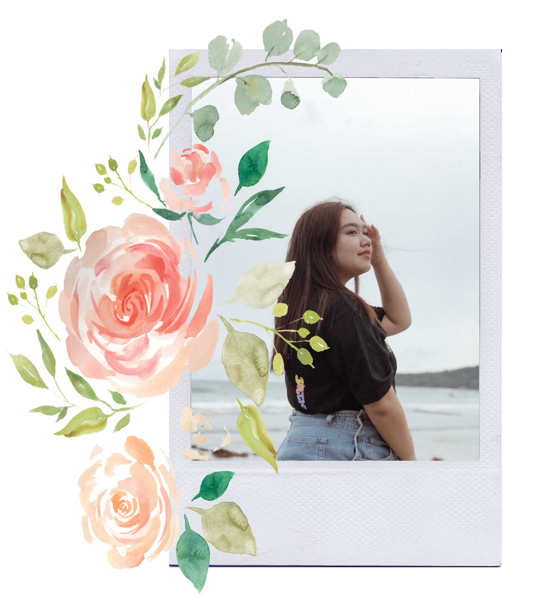

- Name: Hi! I am Rhia Juliana Bonsol Cabrera
- I'd like to be called: Rhia or my nickname, RJ
- When is your Birth Day? : June 20, 2001
- How old are you? : I am now 19 years old
- Where do you live? : I live at Taal, Batangas
- Where do you study? :University of Santo Tomas
- What is your program?: BS Information Technology
- My Family, and my friends. They make me feel alive everyday. All of them are my support system.
- My dog. He is my happy pill. My dog is my best friend too!
- The Sunrise. For me, the rising sun symbolizes hope.It also reminds us of a brand new day with new chances.
- Listening to Music. This makes me calm everytime I am
- Praising God. This unexplaibale feeling is what makes me the happiest.

Eversince I was a child, I was really fond of showing my love and affection to my parents. As an only child, it was not hard for me to be close to my family since we've only got each other, and each other's all we need. My parents are the reason on why I am working hard. I study hard and do as they say because I know that they want what is best for me. I grew up a happy child because my parents are my ray od sunshine. I am very blessed to have them as my parents because they work really hard to give me a quality life even though life becomes tough at times. I can't say that I am the best daughter, but I am a good one. I am very happy as well that my parents aren't as strict, because I still get to enjoy my life and live it to the fullest. Growing up, they did not stop me to do the things that I want, they taught me what my limits are and when I should start and stop the things going on with my life. I am proud that they are my parents. I will forever be grateful to them not only for everything that they did for me, but also for who I am today.
I am considered “friendly” ever since I was young. There wasn’t a time that I did not make friends on different social events, or in school, and places that I go. I am really easy to get along with. I am that person who you can vibe with easily, no matter who you are, or what you do in life. As long as I know that you are kind and respectful of my being. I really like making friends because I am that kind of person who likes to hear different new stories from different people. I want to hear it because I’ll always learn a lesson or two from their life experiences. I am that friend who will always check on you and care for you like a true sibling. I will make you feel loved all the time but I will still be respecting our boundaries. I am that kind of friend who will always make people laugh and join them on the things that they enjoy for us to create memories. On the three pictures above, they are my main best friends from elementary to high school, and the rest are the group of friends I made in UST. I am very luck to have met them because just like my family, they are my support system. Growing up as an only child was never a problem to me. I’d say, it never made me alone or sad because I have my friends. Probably, being an only child is one of the biggest factor on why I am good at making friends. It’s probably because of my longing for a sibling, to void the emptiness I feel inside. Thankfully, I have the most supportive, loving and genuine friends. My heart flutters every single time that I see them or talk to them because I feel safe and secured. Indeed, they are like my family. I am genuinely happy because of the friendships I made.
Growing up, I wasn’t that “smart” kid. I did not get academic achievements when I was in Preschool because I am not that kid who studies. I am that kid who plays all the time. In Grade School, I started to gain few academic achievements because I was motivated to study. As I grow up, I realized the importance of studying. I went to High School and Senior High school here in our province, Our Lady of Caysasay Academy, Taal Batangas. Aside from excelling in my academic endeavors, I was also active on different extra curricular activities that involves computers. And from there, I was known to be that girl who knows a lot of things on computers. Every single year, I was invited to join competitions. My classmates and friends were always supportive of me, that is why I always do my best. Though I excel with computer or technology related things, I am more decided to be a doctor in Junior High School. I always enjoyed the thought of being a doctor where I can help other people. But things changed as I enter Senior High School. There were lots of moments wherein I realized that being a doctor isn’t for me because I cannot see my future being in that profession anymore. Instead, I thought that Information Technology is the course for me. Thankfully, I passed the University of Santo Tomas Entrance Test. I’d always say to myself back then that Its UST or Nothing. UST was mu only choice because it is my dream school, forever will be. Now that I am studying here, I am grateful because I get to experience the Thomasian life. There were lots of struggle adjusting to a new environment, but it its bearable because I’ve met my best friends. Although I am still doubting myself because of the academic failures I am receiving, it won’t stop me from chasing my dreams. It won’t stop me from doing what I love.